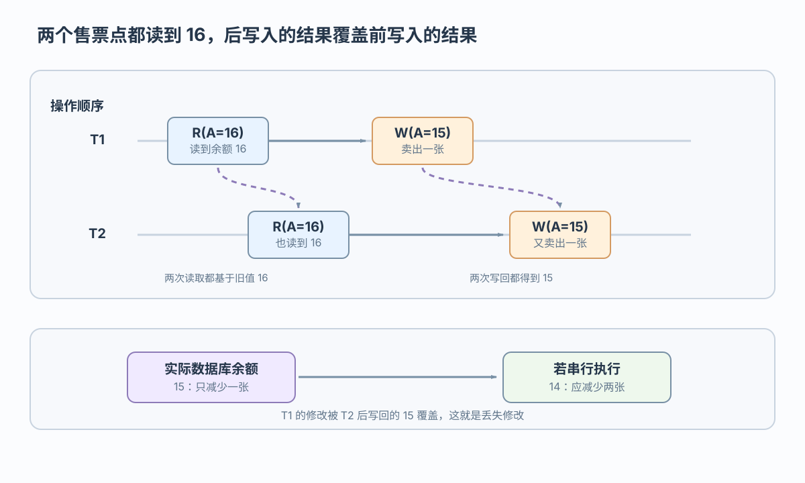
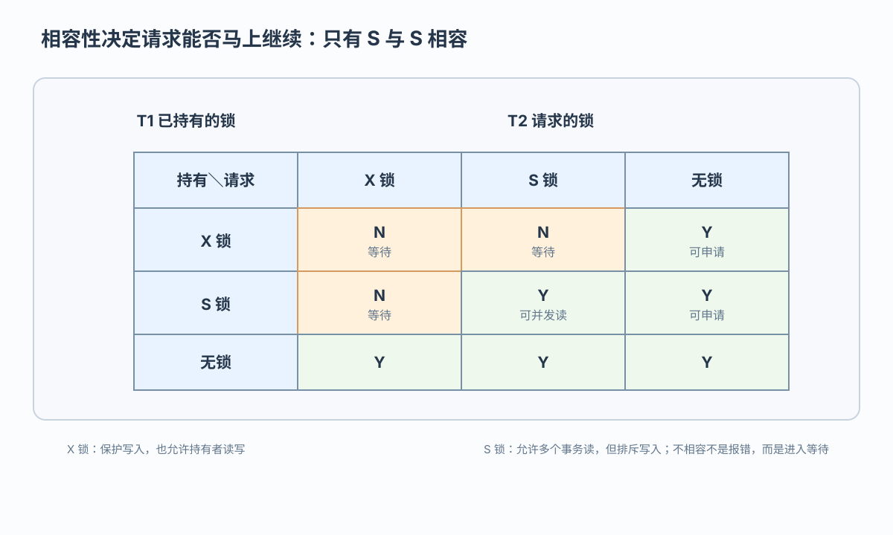

丢失修改
后一次写入覆盖先前写入，导致前一更新丢失：R1→R2→W1→W2
从并发异常推导隔离与封锁规则
 VER. 2608.2
Built with impress.js
VER. 2608.2
Built with impress.js
完成本节后，你应该能够
并发提高利用率，但交错调度必须保持事务隔离和正确结果
| 执行方式 | 运行特点 | 主要风险 |
|---|---|---|
| 串行执行 | 一次只有一个事务 | 资源空闲、吞吐下降 |
| 交错并发 | 单处理机轮流推进 | 读写顺序可能覆盖 |
| 同时并发 | 多处理机真正并行 | 冲突更难直接观察 |
｜ 交错：R1(A)→R2(A)→W1(A)→W2(A)`后一次写入的 15 覆盖先前写入的 15

串行执行两次应得到 14；交错执行得到 15，后写入覆盖了前一更新
根据操作顺序识别异常，再选择隔离方式
后一次写入覆盖先前写入，导致前一更新丢失：R1→R2→W1→W2
事务读取另一个事务随后撤销的未提交值：W1→R2→ROLLBACK1
同一事务两次读取同一数据项，结果不同：R1→W2→COMMIT2→R1
同一事务两次按谓词查询，其他事务插入或删除匹配记录，结果集发生变化
级别越高，能排除的异常越多，系统代价通常越大
可串行化表示结果等价于某个串行次序；具体调度还要检查冲突操作
四级都能避免丢失修改，但其他保证不同
| 隔离级别 | 脏读 | 不可重复读 | 幻读 | 典型代价方向 |
|---|---|---|---|---|
| 读未提交 | 可能 | 可能 | 可能 | 低 |
| 读已提交 | 避免 | 可能 | 可能 | 较低 |
| 可重复读 | 避免 | 避免 | 可能 | 较高 |
| 可串行化 | 避免 | 避免 | 避免 | 高 |
隔离级别描述事务可以观察到的结果；封锁、MVCC 等是不同实现路线，幻读还涉及范围或谓词保护
事务先申请锁，获准后才能按规则读写
事务针对同一数据对象请求 S 锁或 X 锁
数据库判断新请求与已有锁是否相容
相容则获准读写，不相容则进入等待
事务按封锁协议释放锁，等待者才可能继续
不相容请求进入等待，由持锁事务释放锁后再继续；这属于并发控制，不是恢复动作
相容性决定第二个事务能否立即继续

持有者可以读，其他事务还能申请 S 锁，但不能申请 X 锁
持有者可以读写，其他事务不能申请任何类型的锁
不相容请求进入等待；例如 T1 持有 S(A) 时，T2 请求 X(A) 不能立即继续
对读—改—写的数据项，先取得 X 锁再读入；所有协议都把 X 锁持有到事务结束
| 协议 | 写入前与读—改—写 | 读前 | 释放规则 |
|---|---|---|---|
| 一级 | 加 X 锁 | 不强制加 S 锁 | X 锁到事务结束 |
| 二级 | 加 X 锁 | 加 S 锁 | S 锁读完释放，X 锁到事务结束 |
| 三级 | 加 X 锁 | 加 S 锁 | S 锁、X 锁都到事务结束 |
“读前加 X 锁”特指读—改—写场景；所有协议至少要求在写入前取得 X 锁，三级协议还把 S 锁持有到结束
从一级到三级，读取保护越来越强
在三级协议的抽象中，协议语义对应可串行化；幻读还需要范围或谓词保护
趋势统计和资金扣账对一致性的要求不同
| 业务情境 | 关注风险 | 隔离目标与实现选择 |
|---|---|---|
| 允许暂时不一致读结果的趋势统计 | 少量暂时误差 | 可从较低隔离、较高并发的方案开始评估 |
| 普通订单查询 | 不读未提交数据 | 可从读已提交起步，再按实现选择锁或 MVCC |
| 余额扣账 | 不能重复或覆盖 | 需要更强隔离或显式 X 锁，按业务语义判断 |
判断顺序是业务风险 → 可接受异常 → 隔离目标 → 锁或其他实现；表中只给出情境示例，具体默认值取决于产品与配置
并发控制从识别异常开始，再把隔离要求落实为锁规则
四类异常包括丢失修改、脏读、不可重复读和幻读
四个级别逐步加强一致性保证
S/X 锁决定不相容请求是否等待
申请与释放时机决定协议的保证范围
并发异常 → 隔离目标 → S/X 锁相容性 → 协议申请与释放时机
R1(A) R2(A) W1(A) W2(A)，如何判断它是串行还是交错调度，并说明异常？